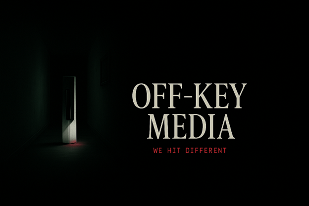

Every Moment Worth Keeping
Cinematic, culturally grounded storytelling for creators, brands, organizations, and real people building something bigger than themselves.
Book a SessionMission Statement
We Turn Culture Into Cinema
Off-Key Media exists to create cinematic, culturally grounded storytelling that reflects real people, real ambition, and real life.
We believe powerful stories are everywhere: in the streets, small businesses, independent artists, nightlife, overlooked communities, and in everyday people building something bigger than themselves.
Our mission is to bridge the gap between independent creativity and professional production by providing high-quality film, media coverage, and visual storytelling that feels authentic, elevated, and unforgettable.
From script development to full-scale production, we help creators, brands, and organizations bring their vision to life with purpose and cinematic impact.
We are committed to spotlighting both talent and the beauty of the city itself, capturing not just moments, but culture. Off-Key Media is built to make Chattanooga impossible to ignore.
"We don't create content. We turn culture into cinema."